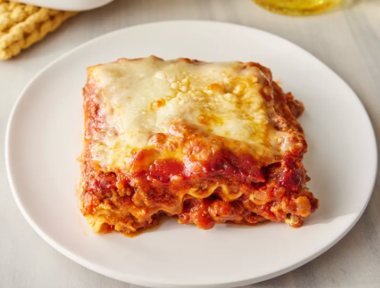
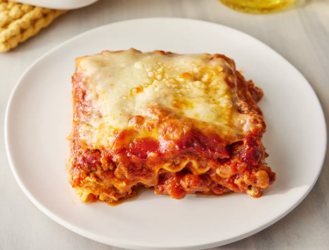
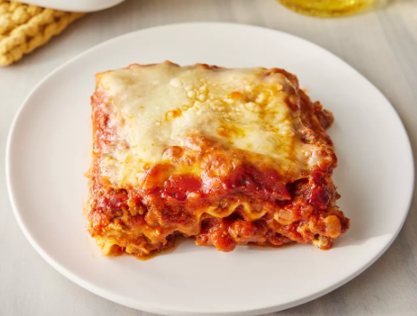
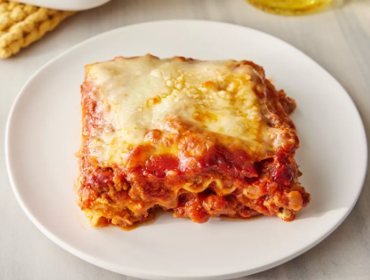

| Prep Time: 30 mins |
Cook Time: Time: 2 hr 30 mins |
Additional Time: 15 mins |
| Total Time: 3 hr 15 mins |
Servings: 12 |
|
| Jump To Nutrition Facts | ||
Making lasagna can be time-consuming, but the results are well worth the wait.
You'll find a detailed ingredient list and step-by-step instructions in the recipe
below, but let's go over the basics:
The Allrecipes community adores this lasagna recipe because it's incredibly
customizable, so you can easily alter the ingredient list to suit your needs. If you
want to stay true to the original recipe, though, these are the ingredients you'll
need to add to your grocery list:
Here's a very brief overview of what you can expect when you make homemade lasagna:
Step 1
Gather all your ingredients.
Step 2
Cook sausage, ground beef, onion, and garlic in a Dutch oven over medium heat
until well browned.
Step 3
Stir in crushed tomatoes, tomato sauce, tomato paste, and water. Season with
sugar, 2 tablespoons parsley, basil, 1 teaspoon salt, Italian seasoning, fennel
seeds, and pepper. Simmer, covered, for about 1 1/2 hours, stirring occasionally.
Step 4
Bring a large pot of lightly salted water to a boil. Cook lasagna noodles in boiling
water for 8 to 10 minutes. Drain noodles, and rinse with cold water..
Step 5
In a mixing bowl, combine ricotta cheese with egg, remaining 2 tablespoons
parsley, and 1/2 teaspoon salt.
Step 6
Preheat the oven to 375 degrees F (190 degrees C).
Step 7
To assemble, spread 1 1/2 cups of meat sauce in the bottom of a 9x13-inch
baking dish. Arrange 6 noodles lengthwise over meat sauce. Spread with 1/2 of
the ricotta cheese mixture. Top with 1/3 of the mozzarella cheese slices. Spoon 1
1/2 cups meat sauce over mozzarella, and sprinkle with 1/4 cup Parmesan
cheese.
Step 8
Repeat layers, and top with remaining mozzarella and Parmesan cheese. Cover
with foil: to prevent sticking, either spray foil with cooking spray or make sure
the foil does not touch the cheese.
Step 9
Bake in the preheated oven for 25 minutes. Remove the foil and bake for an
additional 25 minutes.
Step 10
Rest lasagna for 15 minutes before serving.